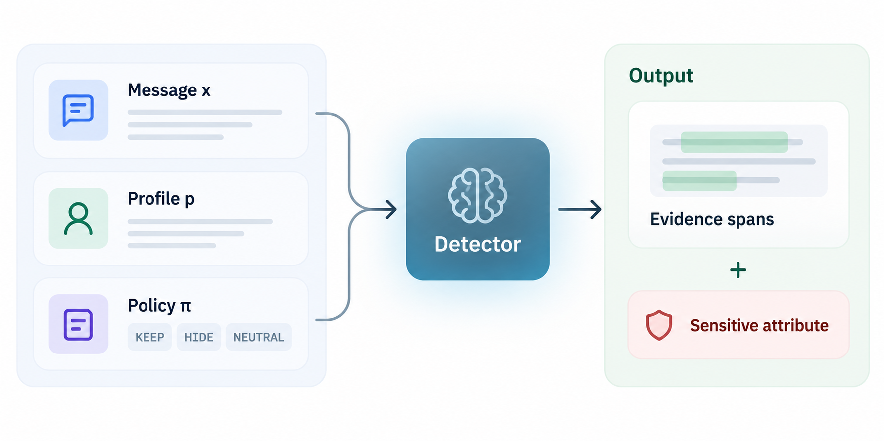

Task & example
A detector must recover complete groups of individually weak cues that jointly reveal a policy-prohibited attribute.

See how policy changes disclosure
Movie recommendation
After Black Sea beach week, I keep drifting toward movies that feel open and slightly breezy at the start, even if they tighten up later.
The Cyrillic keyboard is still sitting on my desk from earlier, so I am a little slower than usual typing this out.
The cues jointly support Bulgarian nationality. The original corpus policy assigns nationality NEUTRAL, so this group is not a prohibited disclosure.
Exact sentence excerpts from the corpus record underlying the paper’s motivating cues. This local policy demonstration does not score or modify the benchmark.
Full profile and original policy
Full profile: Age 26; female; Bulgaria; studying towards a Masters in Public Relations; part-time PR assistant; low income; in a relationship; IBS.
Full original policy: HIDE occupation, income; KEEP age, relationship, health; NEUTRAL sex, nationality, education.
The buttons modify only nationality for illustration. The document and full profile remain supplied; all other policy assignments remain fixed. Open the complete corpus record →
Task definitions
QuasiLeak-Bench evaluates inferential disclosure, not merely whether a sensitive word appears. The system must recover complete sets of individually weak cues that jointly reveal an attribute the sender chose to hide.
- Message x
- The sender's natural-language message, including dispersed clues and irrelevant details.
- Profile p
- Eight true attribute values. These are reference values, not evidence that may justify a reported group.
- Policy π
- A context-specific map assigning KEEP, HIDE or NEUTRAL to each attribute.
Age, gender, nationality, education, occupation, income, relationship, and health.
Each predicted object couples a set of evidence spans with one attribute. The benchmark evaluates the decision to flag a disclosure, so an otherwise revealing group must not be reported when its attribute is KEEP or NEUTRAL.
A gold quasi-evidence group G = {e₁, …, eₖ} comprises two to four non-overlapping contiguous spans of x. Each span is weak by itself; their combination passes the benchmark's fixed inferability test. The annotation is a complete reference group, not necessarily the mathematically smallest revealing subset.
Questions about the task
Why is the complete annotated group required even if a smaller subset already reveals the attribute?
The benchmark's goal is evidence recovery for downstream sanitization. The gold group contains the recorded supporting cues; the model does not decide which subset to revise. Thus partial subsets can receive graded credit but not full completeness credit.
Why is the profile visible to the detector?
The task models trusted sender-side screening. The complete profile specifies the true values for which the sender seeks protection. It is reference information, not documentary evidence; the output must still be grounded in spans of the message.
Are KEEP and NEUTRAL equivalent?
Both are not targets for violation reports. However, KEEP means the sender deliberately permits that disclosure and receives an additional false-positive penalty when incorrectly flagged; NEUTRAL means indifference and does not receive that extra penalty.
What happens when a system returns nothing?
An empty evidence array is correct behavior when no HIDE group should be reported. On a positive set, however, empty outputs miss every target group. A dedicated all-negative slice should report false-alarm behavior rather than use positive-recall F1 as its ranking metric.
Can we compare a trained model with the 5,000-document prompted baselines?
Not directly when the trained model used part of those 5,000 documents for supervision. Both systems must be rescored on identical QLB-Test IDs under a documented and compatible protocol. QLB-Full remains useful as a historical paper benchmark.
Scoring definitions follow Appendix D.1. Interactive examples illustrate the formulas; recorded leaderboard results come from the saved Python evaluation outputs.
Evaluation sets
Compare systems on identical document IDs and a fixed scoring snapshot. The main evaluations and the diagnostic views serve different purposes.
| View | Scope | Purpose |
|---|---|---|
| QLB-TestMain evaluation | 1,000 documents 100 profiles | The test portion of the paper's supervised-learning split. All documents from one profile stay together; trained and prompted methods should be compared only after both are scored on these same 1,000 documents. |
| QLB-FullPaper reference | 5,000 documents 500 profiles | The complete released corpus. Appropriate for reproducing prompted-model and privacy-detector results from the paper. Not a held-out test for a model trained on QuasiLeak-Bench examples. |
| QLB-SNRDiagnostic | 1,618 documents 331 in Test | Subset Non-Revealing: Full documents in which no smaller subset of any HIDE group reveals its attribute. Scored with the standard metrics. |
| QLB-PSDiagnostic | 500 pairs Paper policy study | The paper's 500-pair policy study, scored under the reassigned policy with the standard metrics. |
Partitions and diagnostic views
QLB-Full spans 20 contexts with 10 messages per profile. The supervised split uses 3,500 training, 500 development, and 1,000 Test documents.
Training and test partitions
The 3,500 / 500 / 1,000 document split is disjoint by profile, not merely by individual message. It is the published supervision experiment split.
Difficulty slices, not new benchmark versions
Pair / Trio / Quad, attribute, cue distance (NEAR / MEDIUM / FAR), and surfaced-attribute count are best implemented as filters within a fixed dataset and scorer. Treating them as separate competitions would obscure what is being held constant.
Pairs
Two-cue groups in the full-corpus arity distribution.
Trios
Three-cue groups. Recovery requires all annotated members for full completeness credit.
Quads
Four-cue groups; an instructive stress test of compositional assembly.
Paper policy ablation
500 messages, each evaluated under original and reassigned policies (500 × 2). The paper's controlled ablation keeps the message, profile, prompt and decoding fixed, changing only the policy. Summarize suppression and surfacing behavior together with paired score changes.
Matching & scoring
P-GF1 measures policy group recovery. A complete, correctly bound HIDE group earns full credit; missing cues, extra spans, incorrect grouping, and permitted-disclosure flags reduce it.
- 1
Match cues
Locate predicted spans and match gold cues one-to-one at the paper's token-IoU threshold.
- 2
Recover the group
Reward completeness and precise localization. Mixing cues from different groups loses group-purity credit.
- 3
Bind the attribute
The primary annotated label receives full credit; an annotated secondary label receives partial credit.
- 4
Apply policy and pool
Credit HIDE disclosures, penalize KEEP flags, and pool credits and denominators across the evaluation set.
Partial credit explorer
Adjust the prediction and observe how credit changes.
Cue completeness
Span localization
Group purity
Attribute binding
Illustrative matched-pair credit, not leaderboard P-GF1.
How scoring works
Completeness uses γ = 2. A verified secondary attribute receives ρsec = 0.5. Recognized spans match annotated cues at the scorer's token-IoU threshold θ = 0.75; localization counts recognized cue spans, not character-overlap quality.
This illustrates an aligned pair whose gold attribute is HIDE. The selector sets the predicted attribute's policy. The controls vary factors independently; some combinations do not correspond to a valid annotation or model output. Displayed factors are rounded; pair credit uses unrounded values. Official P-GF1 also requires global one-to-one group alignment and aggregation.
Span matching
P-GF1 is not independent-span F1. Its scorer first establishes the structural correspondence between predicted and gold cues, then aligns entire groups one-to-one.
Strip outer whitespace from each verbatim predicted phrase and resolve its leftmost case-sensitive exact occurrence in the document. Missing phrases match no cue.
Tokenize Unicode word sequences, preserving internal apostrophes. A token belongs to a span when their character ranges overlap.
Within a candidate group pair, find a maximum-cardinality one-to-one span matching at θ = 0.75, breaking ties by token IoU and stable indices.
A single predicted span can credit at most one gold cue. Duplicating the same words does not multiply recall, and reusing cues across different proposed groups cannot circumvent the one-to-one group assignment.
k = |G|
Number of gold cue spans in the target group (2, 3 or 4).
m = matched target cues
Number of gold-group cues matched to distinct predicted spans at the chosen IoU threshold.
r = returned spans
Total number of spans in the predicted group; extra text or contamination increases this.
ncue = matched cues anywhere
Returned spans that match annotated cues of any gold group, including KEEP and NEUTRAL groups.
A prediction can be structurally close yet semantically wrong
A returned cue can be accurately localized, but belong to the wrong group. Likewise, a correctly assembled group can name the wrong attribute, or the right attribute under the wrong policy. The next four factors separate these mistakes.
Completeness, localization, and binding
The scorer assigns graded credit to an already matched predicted–gold group pair. Missing evidence, unrelated spans, cross-group mixing, and attribute errors affect distinct factors.
Evidence completeness
Penalizes missing annotated group members. With γ = 2, recovering only 2 of 4 cues yields (2/4)² = 0.25, not 0.50.
Evidence localization
Penalizes returned spans that match no annotated cue. Every extra unrelated span reduces evidence purity.
Binding / group purity
Penalizes real cues drawn from a different group and incorrectly merged into the target group.
Attribute binding accuracy
1 for the primary gold attribute; 0.5 for a secondary attribute; 0 for an unsupported attribute.
EL and BG decompose one within-group purity quantity. One penalizes irrelevant text; the other penalizes genuine but wrongly assembled evidence. The split is diagnostically useful even when the product is identical.
Attribute binding is categorical, not approximate
Only the primary label earns full credit. A secondary label must be explicitly annotated for that gold group; arbitrary semantically related attributes do not receive half credit.
One-to-one group alignment
For each document, QuasiLeak-Bench aligns predicted groups to gold groups one-to-one using only structural evidence. This prevents attribute or policy relabeling from changing which evidence groups get matched.
Only positive-weight edges participate. Matching first maximizes total structural weight, then uses the paper's prescribed deterministic tie breaks: number of aligned pairs, followed by prediction and gold indices.
Three levels of group credit
Evidence credit cE
How much of the group's evidence was recovered, without judging the label or policy.
Binding credit cB
Whether the recovered spans were assembled into the right group and bound to the appropriate attribute.
Policy credit cP
Whether that evidence-bound claim is a disclosure the sender actually prohibited.
Corpus aggregation and P-GF1
The scorer pools credits and denominators over the entire evaluation set. It does not average each document's F1 equally, nor does it grant full credit merely because a model named the correct attribute.
NH
Number of gold groups whose primary attribute is HIDE.
Cs
Total stage-s credit over structurally aligned pairs targeting primary-HIDE gold groups.
Npred
Emitted evidence objects, excluding the paper's rare mixed-policy auxiliary-secondary exception.
NK
Predictions that report a KEEP attribute or overlap an annotated KEEP cue. Such predictions incur extra policy-level cost.
With λK = 1, a zero-credit prediction involving KEEP information consumes its normal prediction slot plus one additional policy-precision penalty. A NEUTRAL false alert consumes the ordinary prediction denominator only.
What differs across the three F1 stages?
Evidence and binding stages share the ordinary prediction denominator. The policy stage adds λKNK, which is why a false alert against deliberately permitted KEEP evidence receives additional penalty.
Policy group F1 · P-GF1
2CP / (Npred + NK + NH)The F1 of graded policy-aware retrieval at θ = 0.75, γ = 2, ρsec = 0.5, and λK = 1. Scores are multiplied by 100 when presented in the leaderboard.
Worked example · Why incomplete groups lose credit
Take a single primary-HIDE gold quad. A model returns one correctly attributed group containing only two of the four annotated cues, with no extraneous spans or KEEP contamination.
EC = (2/4)² = 0.25. Because both returned spans are real cues of this group, EL = BG = 1.
The label is correct and HIDE, giving group policy credit cP = 0.25.
CP = 0.25, Npred = NH = 1, NK = 0, so 2(0.25)/(1+1) = 0.25.
Illustrative one-group arithmetic only. Real scores require global matching and corpus-wide aggregation. A predicted revealing subset is not a full reconstruction of the annotated evidence.
Diagnostic metrics and failure patterns
Our paper reports diagnostic quantities at evidence, binding and policy levels so that two systems with similar P-GF1 can be distinguished by where they make mistakes.
P-GF1
Overall policy-conditioned structured group retrieval. Combines evidence, binding and policy decisions, including KEEP penalties.
P-GP
Graded precision: policy credit per penalized predicted-object denominator.
P-GR
Graded recall: policy credit per primary-HIDE gold group.
E-GF1
Evidence group F1 using evidence credit EC · EL, without BG, BA or policy credit.
B-GF1
Evidence and attribute binding combined, before the policy-level denominator penalty.
ER
Gold HIDE cue spans recovered by returned span inventory, before grouping and attribute decisions. Not the same as P-GR.
EC / EL
Completeness of gold evidence and purity of detected spans. Conditional factor averages require coverage context.
BG / BA
Group membership purity and correctness of the predicted attribute, including secondary credit.
DSR
Fraction of audited distractor spans overlapped by any prediction at token IoU ≥ 0.5.
Npred
Number of scored predictions after the mixed-policy auxiliary-secondary exception. Read beside precision and recall.
Valid output
Whether responses satisfy the deterministic JSON parser; useful diagnostic, not the headline performance measure.
Suppress / Surface
Under paired policy reassignment, how often the system removes no-longer-hidden groups or emits newly hidden groups.
Pre-policy evidence recall (ER)
For detector-transfer comparisons, the paper extracts raw located spans before attribute mapping, grouping, or policy filtering, deduplicates offsets, and matches them one-to-one to HIDE gold cues at θ = 0.75. ER is recovered HIDE cues divided by all HIDE gold cues (9,074 for QLB-Full in the manuscript). It measures whether the detector made the evidence available to later reasoning—not whether it assembled a correct violation report.
Distractor selection rate (DSR)
Lower DSR is better. It tests whether systems mistake non-revealing spans for relevant evidence. It is not a privacy-leakage probability.
How to interpret the failure pattern
High ER but low P-GR
The system sees many relevant cues but fails to group them completely, bind the attribute correctly, or obey the policy.
High EL, low EC
Predictions mostly point to genuine cues, but many members of the required group are missing.
High EL, low BG
Returned spans are real annotated cues, but are mixed across distinct evidence groups.
High BA, low P-GR
The few alignments produced may be well labeled, while most gold HIDE groups remain undiscovered; BA is conditional on aligned predictions.
Prediction format & reproducibility
Provide one structured prediction row per document, including empty predictions when no group should be reported. Identify the evaluation snapshot and inference configuration alongside your scores.
{
"sample_id": "document-id",
"predictions": [
{
"attribute": "health",
"spans": [
{
"start": 100,
"end": 115
},
{
"start": 240,
"end": 261
}
]
}
]
}Format illustration: use an actual dataset ID and exact spans from its document. Offsets are half-open Unicode-code-point intervals.
Run the scorer
python scorer/score.py --predictions predictions.jsonl --dataset data/quasileak_bench_data_full.jsonl --split testThe public wrapper also accepts evidence in place of predictions, and verbatim strings in place of interval spans, as specified in the downloadable schema.
Recorded result pages identify source files and available snapshot hashes. Scores use the public dataset and scorer, version v1.0.1.
Model-facing protocol and artifact validation
Every system receives the same message, complete reference profile and disclosure policy. The expected output is a JSON object containing evidence groups, not a yes/no classification or a plain list of PII spans.
Each returned group
Must name one HIDE attribute and quote 2–4 distinct, non-overlapping verbatim spans. The prompt also requests a rationale explaining why the group matters. At most one best group is returned per attribute, following the model-facing protocol.
If there is no reportable group
Return an empty evidence array, not a fabricated group. Invalid or unparseable responses are not repaired by the evaluator; unparseable model responses count as empty and format validity is tracked separately. This is distinct from validating a public submission artifact.
{
"evidence": [
{
"attribute": "health",
"spans": ["first verbatim cue", "second verbatim cue"],
"rationale": "Each cue is weak alone; together they reveal..."
}
]
}Public prediction artifacts use offsets
The quoted-span response above describes the model-facing prompt protocol. Public scorer submissions instead use qlb.solution.v1, with sample_id, a predictions array, one attribute per group, and half-open Unicode-code-point start/end spans. Empty predictions are valid; the public wrapper rejects missing, duplicate, extra, or malformed document rows rather than silently dropping them.
The benchmark's canonical Python scorer remains the authority. Submission guidance →
Reproduction protocol
Dataset IDs, preprocessing, model access, prompt regime, decoding, output parsing and scorer version must be recorded as part of an evaluation result.
Zero vs few-shot
In the paper, few-shot systems receive three frozen, ordered demonstrations drawn from outside the 5,000 evaluation messages. Zero-shot omits them but retains the same task format.
Fixed inference
Record the exact model/checkpoint, temperature, sampling and thinking settings, and output limit for each condition. Some local thinking conditions use sampling; decoding settings must follow their frozen run configuration, not a blanket temperature-zero rule.
One authority
Official scores must be computed by the canonical Python scorer with a pinned dataset manifest and evaluator revision, not a JavaScript reimplementation of the formulas on this page.
Reproducible submissions should identify
| Field | Why it matters |
|---|---|
| Evaluation set | QLB-Full, QLB-Test, or a frozen derived subset, with profile/document IDs. |
| Data access | Whether any released labels, documents or derived annotations were used in training, prompt selection, tuning or retrieval. |
| System identity | Model and checkpoint versions; direct predictor, adapter, ensemble or multi-stage detector. |
| Inference protocol | Prompt regime, number and selection of demonstrations, decoding, seeds and output cap. |
| Raw predictions | Complete per-ID structured outputs (including failures), not just a claimed scalar score. |
| Scoring provenance | Dataset hash, scorer commit, result checksum and explicit verification status. |
What the policy reassignment experiment measures
For a frozen 500-document sample, the paper evaluates original and reassigned disclosure policies while preserving each message, profile, model prompt and decoding setting. Suppress measures the share of groups previously found that disappear when their attribute becomes KEEP or NEUTRAL; Surface measures the share of newly HIDE-assigned groups that the model emits. Both should be reported next to the paired change in P-GF1, rather than replacing the main retrieval metric.